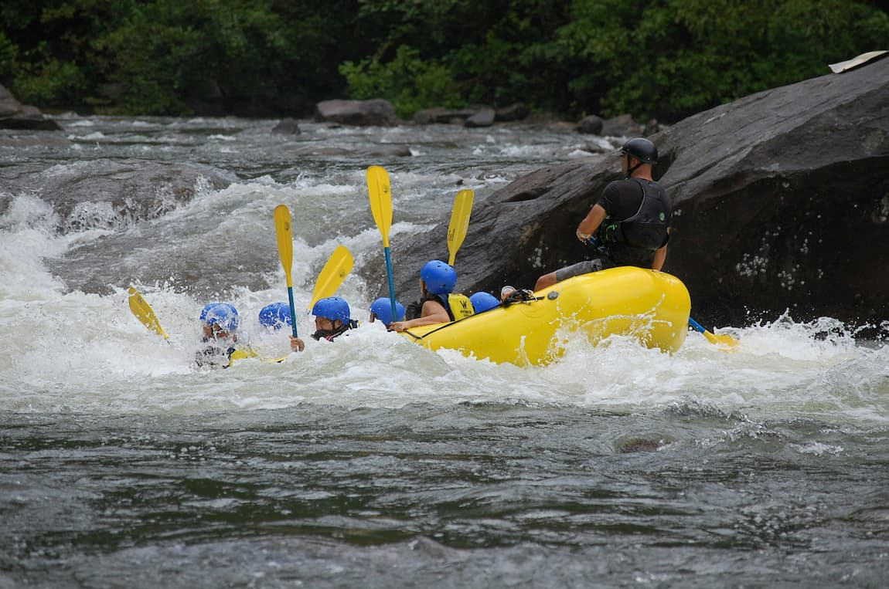
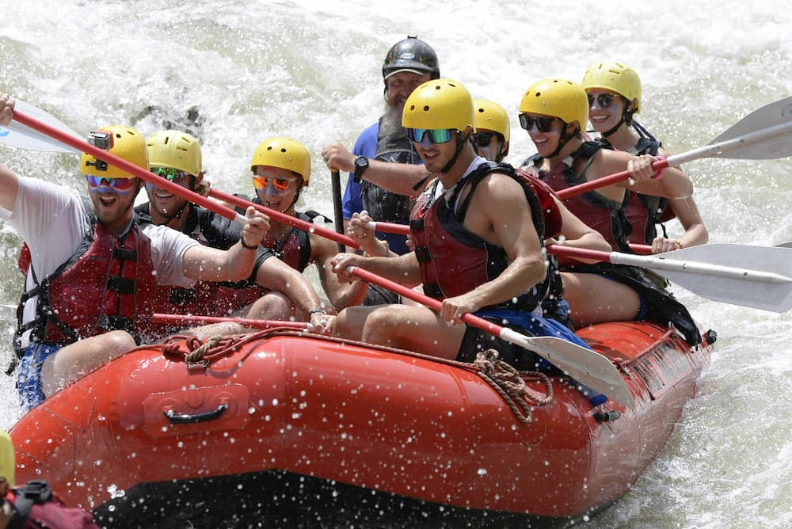
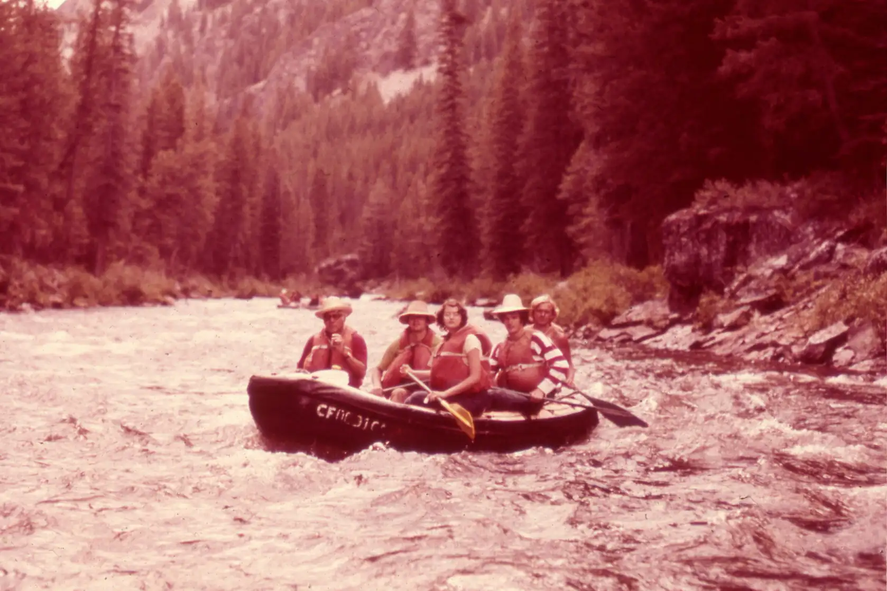
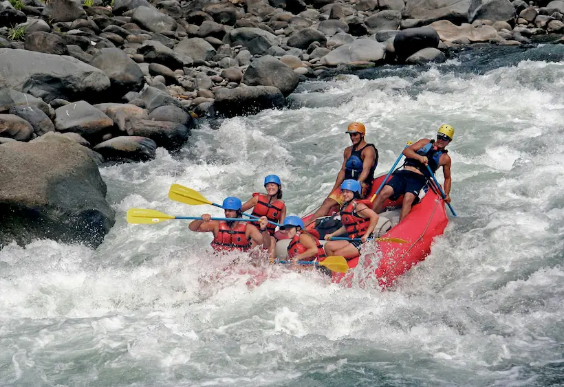
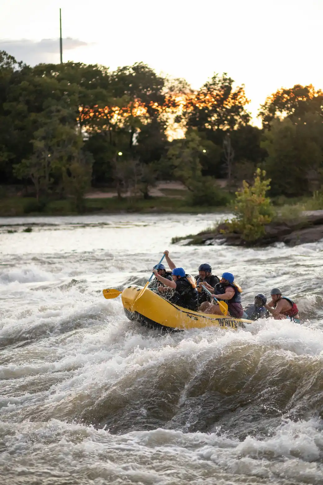
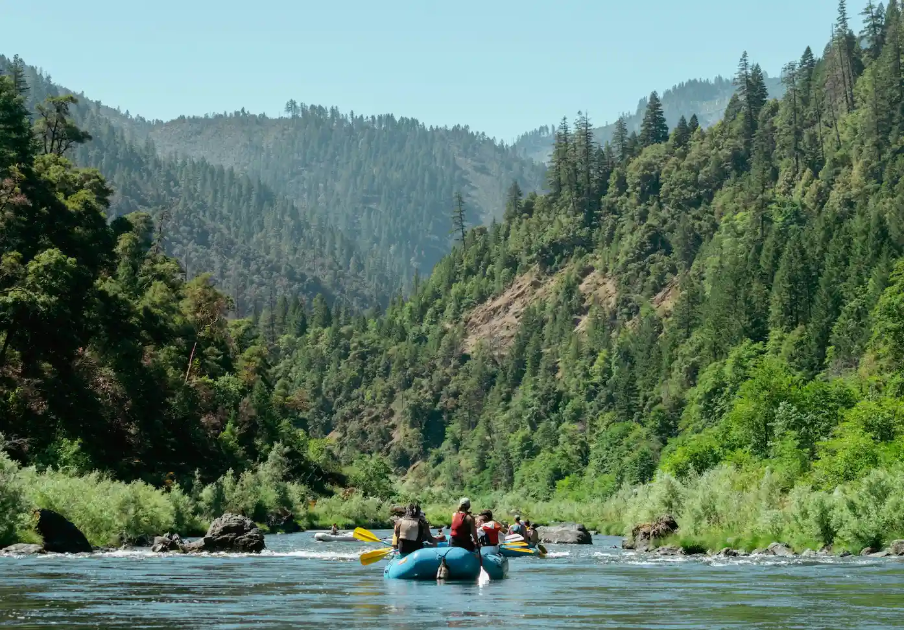
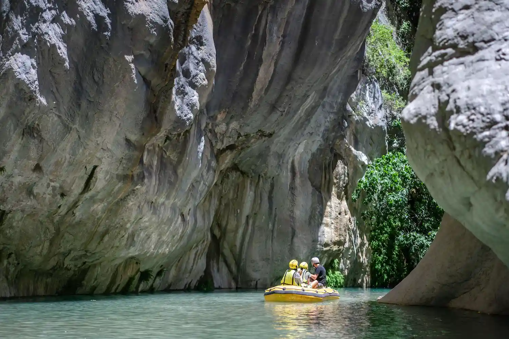
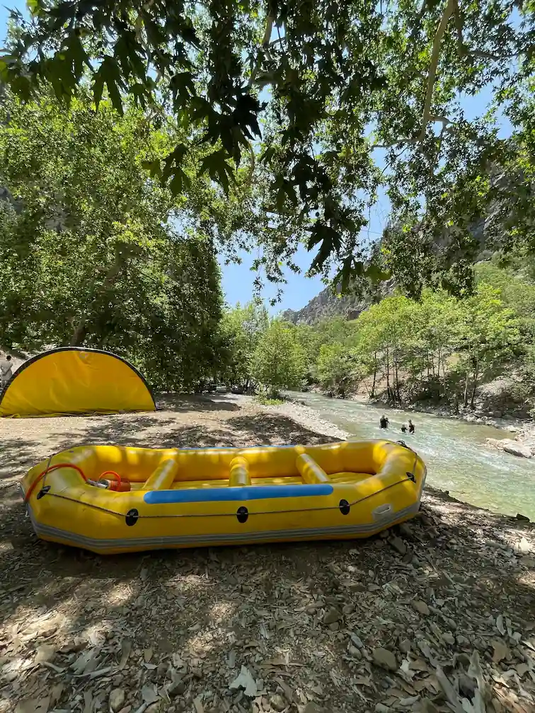

At Stonewater Rafting, our mission is to get you on the river, keep you safe, and send you home with a story worth telling. Every guide is certified in swift water rescue, and every trip is built around the people in the boat.


At Stonewater Rafting, our mission is to get you on the river, keep you safe, and send you home with a story worth telling. Every guide is certified in swift water rescue, and every trip is built around the people in the boat.

Stonewater Rafting started in 1998 with one borrowed raft and two brothers who knew the river better than anyone in town. Word spread, the fleet grew, and today our crew of guides leads thousands of paddlers down the canyon every season.




